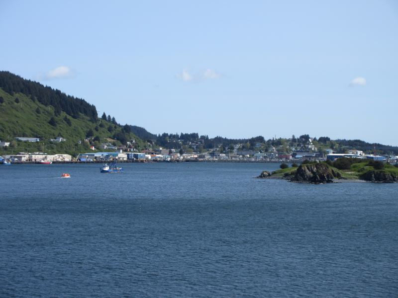
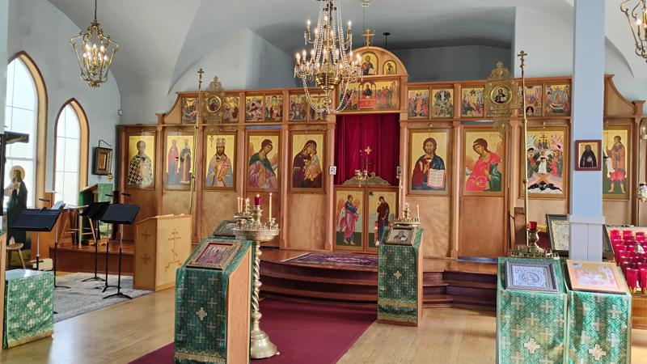
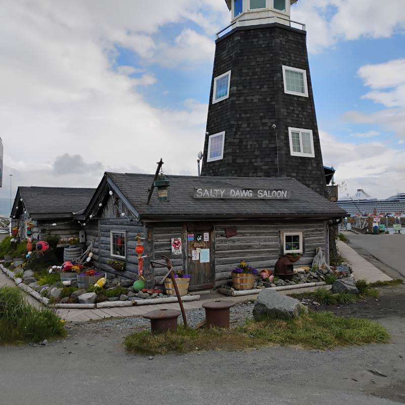
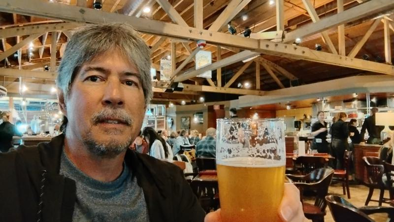
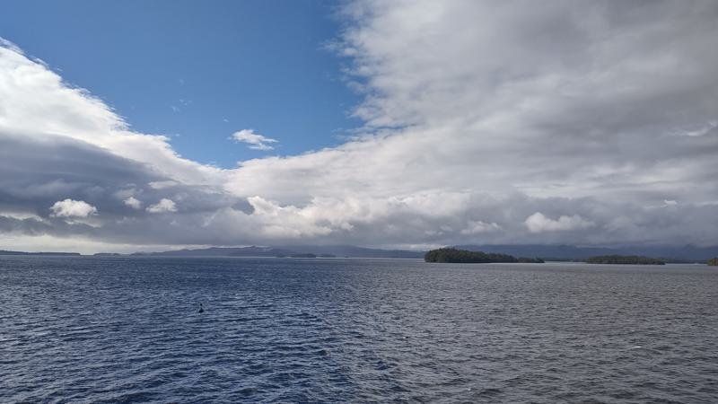
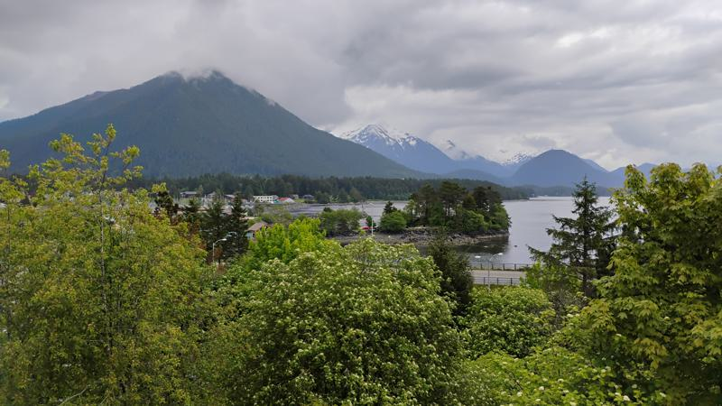
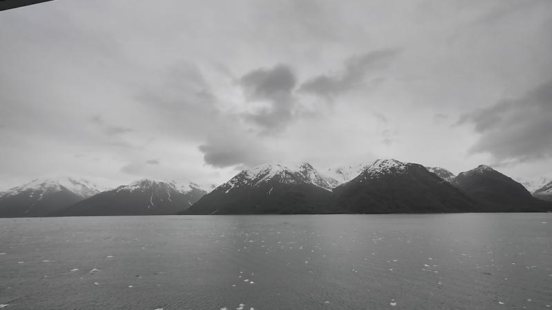

Juneau – June 5
Today we are in Juneau and the weather is rainy and 50F. The rain is forecasted to last all day long. There are five cruise ships in port - Celebrity Solstice (2,852 double occupancy), Grand Princess (2,600 double occupancy), Noordam (1,924 double occupancy), Norwegian Jade (2,402 double occupancy) and the Oceania Riviera. It is also a tender port for the Riviera. On account of the gloomy weather Becky and I are staying on board today.
After breakfast we participated in the regularly scheduled activities, bocce ball, bean bag toss, etc. There are usually two activities scheduled in the morning, one at 930am and the other at 1030am, there are two more activities in the afternoon. So far we have skipped trivia on this cruise. We have collected about 100 Big-O points. Attending these activities also gives us a chance to socialize with the other passengers. One of the passengers gave us a bottle of wine, which was much appreciated since we don’t have the drink package on this cruise. Since the bottle was provided by the ship we don’t have to pay the corkage fee if we bring the wine to dinner.
We had dinner in the main dining room tonight. Becky had braised leg of lamb. She said it was OK, but she would not get it again. Today, she had lamb chops for breakfast, lamb stew with rice for lunch and lamb again for dinner. I think she likes lamb. I had a bite of the braised lamb from her dinner because she said it tasted like beef, but I thought it was lammy and didn’t taste at all like beef. I had the Alaska Salmon, which was listed as the chef’s signature dish. It was good, but nothing spectacular.
We attended two musical performances tonight. The first one, called Jukebox Hero, was very good. The evening show in the theater was called Motor City Moved, which was a mashup of Motown hits choreographed with dancers and singers. We had a hard time staying awake during this one. For some reason, we are always sleepy during these 915pm shows.
Sitka – June 6
This morning we were in Sitka and docked about six miles from town. The Viking Venus (930 double occupancy) was docked next to us. The weather today was overcast with a slight breeze, 50F and little chance of rain. After breakfast and bocce ball we boarded the bus into town.
Our first stop was the Russian Orthodox Cathedral of St. Michael. The building was originally built in 1848, burned down in 1966 and reconstructed. Today, it houses a collection of Russian Orthodox art and church artifacts. The Cathedral was closed the last time we were here, so we were glad to see that it was open today.

We did some window shopping along the main street. One interesting shop was the Sea Salt Company, which sold 4 oz bags of salt for $15 or $3.75 per oz. This is an astronomical price considering that you can get sea salt from Amazon.com for 2 cents per oz. At another store canned Alaska salmon was selling for $16 for a 6.5 oz can. Years ago we bought a can of Alaska salmon and it didn’t taste any better than the canned salmon we could buy at home in the grocery store.
Our next stop was Castle Hill, the location where the transfer of Alaska from Russia to the United States officially took place in 1867. From there we walked to Totem Square, where a signal totem pole stands. We continued to Pioneer Bar & Liquor Store to have a look inside, but see anything that we needed to buy. Our next stop was the Russian Block House, which is a replica of the guard tower that was part of the Russian fort that enclosed the settlement. Nearby was the Russian Cemetery where a few historic headstones are located.
Our last stop was the Sitka National Historical Park, which was established in 1890 and is Alaska’s oldest national park. The park encompasses 113 acres and preserves the site of the 1804 Battle of Sitka, a significant conflict between the Tlingit people and Russian forces. The park contains an impressive collection of authentic Tlingit and Haida totem poles.
Around 2pm we were on the return bus to the cruise ship port. We ordered a few snacks from room service and at 4pm attended afternoon tea. Before dinner there was a party for repeat Oceania cruisers and free drinks were served!
We had dinner in the main dining room and we both ordered the halibut, which was excellent. Later we went to the show, but left after three songs. The performer was billed as a troubadour and storyteller. His mix of songs and stories just didn’t hold our interest. Good thing we sat in the back so we could make an easy exit.
Another daily activity is the Mensa Quiz, worth one Big-O point. I hadn’t been doing this activity, but today I joined a lady from Coeur d’Alene, for the afternoon trivia. She and another lady who we see at bocce ball were on a trivia team and asked me to join their team. The Mensa Quiz is corrected after trivia and a new question sheet is distributed afterwards. The Mensa Quiz is a take home quiz to work on at your leisure. So I decided to attend while Becky was off doing something else, but later she stopped by. The trivia questions are hard. Today there were about 15 teams participating. These two ladies were on a team by themselves, so maybe they were looking for more brain power when they asked me to join. For each question, we would quietly discuss possible answers/guesses and she would write down our answers. Normally this would be only the best answer, but she would write down the three or four candidate answers we had talked over. I thought she would eventually select one answer, but no. When it came time to go over the answers - and everyone corrects their own sheets, if we happened to have written down the correct answer as one of our guesses, she would erase the wrong guesses and give us one point. I’ve never seen this method of grading used before; but when you grade your own work, you can be very easy on yourself. With this advantage, we ended up getting second place.
So after Trivia, the answers to yesterday’s Mensa Quiz were covered and two Big-O points are awarded for all correct answers and one point for participation. I took a photo of today’s quiz with my phone, converted the image to text and copied the questions into Google’s Gemini, its generative artificial intelligence chatbot and large language model. Here are the questions and Google’s answers. It’s amazing what Artificial Intelligence is capable of. Google’s Gemini provides an explanation of its solution in some cases.
- Sonya (also called Sophia) Kovalevsky was born in Moscow and earned a doctoral degree from the University of Gottingen. She has a very prestigious occupation for a woman of her time. What was it?
Answer: mathematics
- Start with the number of sides on a cube; multiply by the square root of 25, then add the number represented by the Roman numeral X. What number do you get?
Here’s how to solve the problem:
- Number of sides on a cube: A cube has 6 sides.
- Square root of 25: The square root of 25 is 5.
- Multiply: 6×5=30.
- Roman numeral X: The Roman numeral X represents the number 10.
- Add: 30+10=40.
You get the number 40.
- Which of the words below is least like the others? KNIGHT DAME KNAVE SCION
Let’s analyze each word:
- KNIGHT: In historical and social contexts, a knight is a person granted an honorary title of knighthood by a monarch or other political leader for service to the monarch or country, especially in a military capacity.
- DAME: In British English, “Dame” is the title given to a woman equivalent to a knight. It’s an honorific.
- KNAVE: Historically, a knave was a male servant or a boy. Later, it came to mean a dishonest or unscrupulous man. In playing cards, it’s the Jack.
- SCION: A scion is a descendant of a notable family.
KNIGHT, DAME, and KNAVE (in its original sense of a boy or servant, or its modern usage as a card) all historically refer to specific roles or titles within a social hierarchy, often with a connection to service, royalty, or social standing. “Knight” and “Dame” are explicitly honorific titles. “Knave” has evolved, but its roots are in a defined social position.
SCION, however, primarily refers to lineage or descent – being an offspring of a particular family. While it implies a certain status due to that family connection, it doesn’t represent a title or a defined social role in the same way the others do.
Therefore, SCION is the least like the others because it describes a relationship of descent rather than a title, rank, or specific social role.
Google got this one wrong. The correct answer is DAME, the only one with a silent consonant.
- The blanks below can be filled in with words spelled with the same four letters in different order. Can you find them?
There once was a musical, _ _ _ _.
It was performed in three _ _ _ _.
When it was through, The audience flew.
And all of the _ _ _ _ went _ _ _ _ .
There once was a musical, CATS
It was performed in three ACTS
When it was through, The audience flew.
And all of the CAST went SCAT
- Which of the scrambled words below is least like the others? The difference has nothing to do with vowels, consonants or syllables. CLBOAT CHEAP PEGAR PPEALENIP
Let’s unscramble the words:
- CLBOAT -> COBALT (a chemical element, a metal)
- CHEAP -> PEACH (a fruit)
- PEGAR -> GRAPE (a fruit)
- PPEALENIP -> PINEAPPLE (a fruit)
Now let’s look at the meanings:
- COBALT: A metallic element.
- PEACH: A fruit.
- GRAPE: A fruit.
- PINEAPPLE: A fruit.
Therefore, COBALT is the least like the others because it is a metal, while the other three are all fruits.
Sea day – June 7
Today was a sea day. The ship entered Disenchantment Bay and in the morning from 8 to 10 am we were at the face of Hubbard Glacier. The ship spun around three times so that everyone got a good view from all spots on the ship. We viewed the glacier from the balcony of our stateroom.
Hubbard Glacier is the largest tidewater glacier in North America. It stretches 76 miles in length and is seven miles wide at its face where it meets the ocean. The glacier towers at a height of 600 feet at its terminal face, with approximately 350 feet visible above the waterline and 250 feet submerged below. The glacier is located about 200 miles northwest of Juneau and originates from the ice fields of the Centennial Range in the Saint Elias Mountains in Yukon, Canada. Unlike many other glaciers worldwide that are currently retreating, Hubbard Glacier has been growing in thickness and advancing since 1895.
After leaving Disenchantment Bay we sailed into the open waters of the Gulf of Alaska and the ship encountered some heavy seas with 20 foot swells. This made us look like drunks when walking down the hallways. Every three or four minutes the ship encounters a set of deep swells and the ship really pitches up and down. The rolling motion is not too bad.
We scored another bottle of wine from a couple from Minnesota who don’t drink. We took the wine to dinner and it was OK. Becky had shrimp for dinner and thought it was so-so. I had the roasted Filet Mignon and it was really good. We skipped the show tonight. We heard from other passengers that they also have trouble staying awake in the theater. Good to know that it’s not just us.
Here is today’s quiz with Google’s answers.
MENSA DAILY QUIZ #10
- A statement, which is probably true, is coiled in the grid below. To spell it out, start with one letter and move to an adjacent letter in any direction. (Hint: Start with an “T”.)
T F F E L L D N
H I E T G I E N
E D R N E N A S
C N E I C E H A
E B E Y T I D I
E W T D S T U P
E N T N A E C N
N I E L L I G EGoogle came up with different answers that didn’t seem correct.
Google’s answer: THE EYES ARE THE WINDOWS TO THE SOUL, AND THE HEART IS THE MIRROR OF INTELLIGENCE.
I rearranged the letters into a line to see if that made any difference to Google.
T F F E L L D N H I E T G I E N E D R N E N A S C N E I C E H A E B E Y T I D I E W T D S T U P E N T N A E C N N I E L L I G EGoogle’s answer: “THE EYES OF AN INTELLIGENT MIND ARE NEVER CLOSED.”
Google was not able to provide the correct answer.
The correct answer: The difference between intelligence and stupidity – intelligence has an end.
- An eight-letter word appears in the box below. Find it by beginning with the correct letter and moving clockwise or counterclockwise around the box, using each letter only once.
D N O W S U O R
The eight-letter word is WONDROUS.
- Pat is three times as old as she was 14 years ago. In seven years, she will be four times as old as she was 14 years ago. How old is she now?
Here’s how to solve the problem:
Let P be Pat’s current age.
From the first statement: “Pat is three times as old as she was 14 years ago.” This translates to the equation: P = 3 * (P - 14)
Let’s solve this equation for P: P = 3P - 42 42 = 3P - P 42 = 2P P = 21
Now let’s check this with the second statement: “In seven years, she will be four times as old as she was 14 years ago.”
Pat’s age in seven years will be P + 7. Her age 14 years ago was P - 14.
Substitute the value of P (21) into these expressions: Pat’s age in seven years = 21 + 7 = 28 Pat’s age 14 years ago = 21 - 14 = 7
The second statement says: (P + 7) = 4 * (P - 14) Using the calculated values: 28 = 4 * 7 28 = 28
Both statements hold true with P = 21.
Therefore, Pat is 21 years old now.
- Fill in the blanks to complete the word below. C _ O _ E G _ _ P _ I _ _ _ LY
The word is CHOREOGRAPHICALLY.
- An eight-letter word appears in the box below. Find it by beginning with the correct letter and moving clockwise and counterclockwise around the box, using each letter only once.
U S I O N I L L
ILLUSION
Kodiak – June 8
We arrived at noon and stayed until 8pm. The weather was mostly sunny, windy and 60F. Kodiak is a very small town and the main city of seven communities on Kodiak Island. As of the 2020 census, the population of the city is 5,581.

In the morning we had breakfast in the main dining room and played Bocce Ball and carpet darts. The ship was still rolling and pitching with the large sea swells. As we approached Kodiak the seas calmed down.
Our plan for today was to explore the town on foot. The tender ride to the harbor took about 20 minutes. Our first stop was at the Kodiak National Wildlife Refuge Visitor Center. Here there were a few small exhibits about the history and wildlife on the island. Most of the eastern part of the island is a wildlife preserve and the bear population has recovered to historical levels.
Nearby was Holy Resurrection Russian Orthodox Church; the doors were open and the parishioners were having a Sunday potluck on the grass in front of the church. The potluck looked like it was winding down. As we approached the church, one of them said welcome, go in and look around, so we did. He asked if we were Orthodox, we said no, Roman Catholic. He said, oh, you’re like our cousins. Inside the church are the relics of St. Herman, a Russian Orthodox monk and missionary to Alaska. He is considered by many Orthodox Christians to be the patron saint of North America. The church was established in 1794 and elevated to Cathedral status in 2001.

We were back on board by 2pm and went to lunch at Waves, the poolside burger venue on the ship. We both had the burgers, which were small, more like appetizer size. They were good. After lunch we went to the spa and I sat in the steam room while Becky went to shower and get ready for dinner.
After attending one of the afternoon activities, we stopped into the future cruise office to ask a question and ended up making a deposit for a future cruise. We didn’t have a cruise in mind, so it’s just a $500 deposit, for which we will get back several hundred in credits and reductions once we do find a cruise to book. The $500 deposit doesn’t expire, but the credits and savings expire if we don’t book within 12 months. Actually, it was $500 for two deposits. We thought we could apply two deposits to a future reservation, which is the way cruise deposits for NCL work. Later we learned that we didn’t need to buy two, since only one deposit can be applied to a new reservation.
At 5pm we attended happy hour. We have been trying the various martinis on the menu. Becky didn’t care for the one we had tonight, since she prefers the sweeter drinks. We sat with the couple from Minnesota that had given us the bottle of wine the day before.
Dinner tonight was in the Polo Grill, the steak house style restaurant. I had the Filet mignon and Becky had the rack of lamb.
Homer – June 9
Today’s port was the final port before disembarking tomorrow. We arrived at the dock in Homer at 7am. The captain had to make two approaches to the dock on account of the difficult winds and currents. The weather was mostly sunny with strong winds and 45F.
After breakfast in the main dining room and playing a round bocce ball and carpet darts, I headed ashore with another passenger that we became acquainted with over the cruise. Becky did not want to go ashore and his wife was still feeling a bit sick from the rough seas a few days ago.
The Homer Spit is a narrow strip of land extending 4.5 miles into the waters of Kachemak Bay. Located on the spit is a large dock that can accommodate large ships, the Homer Harbor, home to a large fleet of fishing boats and a variety of shops and restaurants which are located at the end of the road.
We stopped to look inside the historic Salty Dawg Saloon before returning to the ship. The Salty Dawg Saloon is a well-known landmark on the Homer Spit. The building originally was one of the first cabins built in Homer in 1897. It was acquired in the late 1940s by Chuck Abbott and in 1949 Chuck and his friend Gerald Gifford put the cabin on skids and moved it to the Homer Spit. In April 1957, he officially opened it as the Salty Dawg Saloon. The Salty Dawg Saloon has its walls and ceiling covered with dollar bills people have stapled to the walls. Becky did some packing in the afternoon while I was out exploring the end of the split.

We received 20 Big-O points each for completing the art scavenger hunt. The redemption of Big-O points occurred today and Becky was able to get a polo shirt, a jacket and an active wear t-shirt. We have some leftover points which we will take home to use on a future Oceania cruise.
The ship pulled away from the dock at 2pm and sailed for Whittier, the terminus to our cruise.
We attended afternoon tea. Snow covered peaks and spots of blue sky provided a very scenic view as we sipped tea and ate the small sandwiches and sweets.
We had happy hour drinks with the couple from Minnesota that we had met a few days ago. After happy hour the four of us went to dinner in the main dining room. Becky and I both had the braised beef short ribs, which were very good. It was 845pm by the time we finished dinner, but there was still light outside which made it seem earlier.
We finished packing our two big suitcases and put them out in the hallway by 10pm for delivery ashore tomorrow morning. We have not been to the port of Whitter, so we didn’t know if it would be easy to carry off our large suitcases. So rather than chance it, we will have them delivered to the cruise terminal tomorrow.
Disembark – June 10
Today is the day we disembark the ship in Whittier. We woke up early to do our final packing. Last night we had set our bags in the hallway with Gray 6 luggage tags attached. I should have asked for a different color had I known the offloading of luggage was going to be so slow. Our bus from Whittier was scheduled to leave at 945am, which based on past experience at other terminals would have given us plenty of time to collect our luggage and make it to the bus on time.
At 915am we decided to leave the ship even though our group had not been called. From the pace it was going, it didn’t seem like our group was going to be called any time soon. I called the bus company and the representative said to just get on the bus. Leaving without our two big bags didn’t make any sense to us. I thought at least I could find the driver and explain that we didn’t have our bags and ask how long he could wait. It turns out the bus was going to be delayed by an hour and when we finally got our bags, we ended up waiting for another 30 minutes on the bus before leaving.
It’s a 15 minute walk from the dock to the terminal. Most of the walk is outside and if it was raining, everything and everyone would be getting wet. My rain parka and umbrella were packed in my big suitcase. I should have kept them with me. Thankfully It wasn’t raining. So if we ever come back here again, that’s something to remember.
The tunnel out of Whittier is a one lane tunnel shared by autos, trucks, buses and trains. The north bound traffic has a top of the hour time assignment, so once our bus was delayed, it would have to wait in increments of one hour for a time slot.
About 1040am our bus departed the cruise terminal and by 1230pm we were dropping off passengers at the airport, our first stop. We didn’t make it to our hotel until 215pm. After checking in and doing some unpacking we walked to a shopping center to look around. For dinner we walked to a nearby restaurant.
As we were leaving the restaurant, I recognized an older couple who was on the ship with us, so I said hello. They ask how long we would be staying in Anchorage and like us, they would be spending an extra day here. As we were walking back to our hotel, he came running after us and asked what hotel we were at. We told him, he said he was at Motel 6. He asked if they served breakfast at our hotel and we said yes, he replied that he might join us. We thought that was weird since we hadn’t spoken with them while on the ship and didn’t really know them.
Anchorage – June 11
The plan for today was to explore downtown Anchorage and have a late lunch. Breakfast at the hotel was fried eggs, sausage, tortillas and coffee. The food was OK.
The weather was sunny, 60F and no wind. We left the hotel around 830am to ride the city bus downtown. Seniors (60+) ride free on Wednesdays. The bus ride took about 20 minutes.
The first item on our list to see was Wyland’s Whaling Wall titled, Alaska’s Marine Life, and painted on the west wall of the J.C. Penney’s building in Anchorage’s Town Square. The mural was painted in 1994.
The Legend of the Sleeping Lady is as follows:
Many millennia ago, a clan of gentle giants inhabited the Great Land, now known as Alaska. Among the giant people was a beautiful young lady and a handsome young man who fell deeply in love with each other. Their unbound devotion was so joyous that all the villagers admired them, and preparations for marriage were underway. On the day before the wedding, a messenger brought dreadful news that a fierce war-like people from the north were invading the country and destroying everything in their path. The village gathered in council to decide what to do. Some suggested going north to attack. The young love-filled man proposed taking gifts to the enemies instead of weapons, showing their interest was in peace and not bloodshed. By morning, the brave volunteers were ready to leave. The young lady had tears of sadness when her lover came to say goodbye. He gazed softly into her eyes and whispered, “I shall return soon with news of peace. Meet me by the slender body of water with two arms.” With one gentle kiss, he turned and joined the departing men. The young woman hurried to the pool of water, known today as the Knik Arm, and began the wait, confident that she would soon be back in her mate’s arms. For many days and nights she busied herself while waiting until, finally, she grew very weary and laid down to rest. She fell into a deep sleep. While she slept, tragic news reached the village that their young men’s pleas for peace had been in vain and a terrible battle had broken out. Most of the giant men were killed or captured. When the village women approached the young lady with the tragic news, they could not bear to disturb her from her peaceful sleep, and left her as she was. To this day, the sleeping lady lies there, dreaming of the moment her beloved will return to her side and peace once again rules the land. (This version of the legend of the Sleeping Lady was compiled from the stories of Nancy Lesh and Ann Dixon.)
Nearby was the AK Log Cabin, a visitor information center. Across the street was the Alaska Public Lands Information Center. We watched a short film about the public lands in Alaska. Here we ran into four Australians from the cruise. They were flying home later in the day. We also saw the Sleeping Lady Mural and Captain Cook’s monument.
We had lunch at a place called the Glacier Brewhouse, a popular place with tourists. We both had Alaskan Cod fish tacos and beers.


Back at the hotel I took a nap and at 5pm there was a manager’s social hour. Clam chowder, salad, cheese cubes and pita bread with hummus were being served. Two types of beer and red and white wine were also served.
Tomorrow we fly home. First leg is Anchorage to San Francisco and the second leg is San Francisco to LAX.
Travel Home – June 12
In Anchorage we had the free hotel breakfast. Today it was pre-made cheese omelets, sausages, pulled pork, flour tortillas and coffee. I made a breakfast burrito.
After breakfast we did our final packing and caught the hotel shuttle to the airport. The shuttle ride to the airport took only ten minutes. We weighed our bags at a packing station at the Alaska terminal and Becky’s bag was 44 pounds and mine was 48 pounds. Our bags seemed heavier than the 50 pound limit. At the checkin counter we were told that we were a bit early to check in our bags, but the agent sent our bags through anyway, because we were just a bit over the 4 hour limit to check in. Our plan was to arrive a bit early to spend a few hours in the Alaska Boardroom prior to our flight, but the hotel check out, waiting for the shuttle and ride to the airport took way less time than we had allotted.
The Alaska Boardroom Lounge in the Anchorage airport was nice. The food is free as well as basic alcoholic beverages. The boardroom was fairly empty when we arrived, but filled up later in the morning. Becky ordered a caramel latte and I had an IPA. Later we had some of the breakfast items. I made another breakfast burrito consisting of scrambled eggs, chorizo, cheese and sour cream.
The anchorage airport is a busy cargo hub and we saw lots of 747 cargo planes landing for fuel on their way to and from Asia or the US.

The weather this morning was sunny and 55F. I tried to locate Denali as we took off, but I couldn’t pick it out. There are just too many snow covered mountains in Alaska. Our flight route took us out over the ocean all the way to Northern California. Most of the way was overcast, so there was nothing to see out the window until we got to San Francisco. We pre ordered our meals, I had the hamburger and Becky got a pasta entree.
We had a one hour layover in San Francisco and the Alaska Boardroom Lounge was conveniently almost directly across from our departure gate. We had about 30 minutes to spend in the Boardroom, just enough time to grab a bite to eat and a cup of coffee. The food being served was pasta and salad.
The flight from SF to LAX was about 1.5 hours long. When we arrived it was about 9pm and by 920pm we were on the Flyaway bus to Van Nuys. The traffic was light and by 11pm we were back home.
Scenic Photos
Here are some scenic photos, in no particular order.



